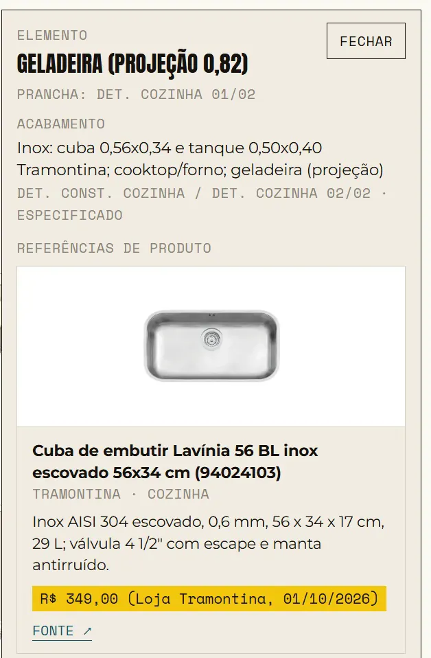
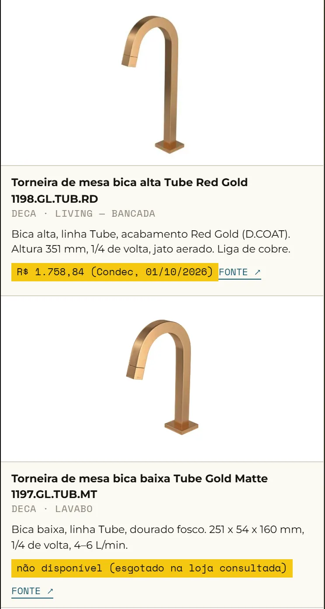
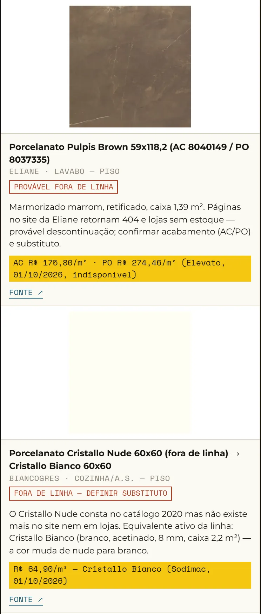
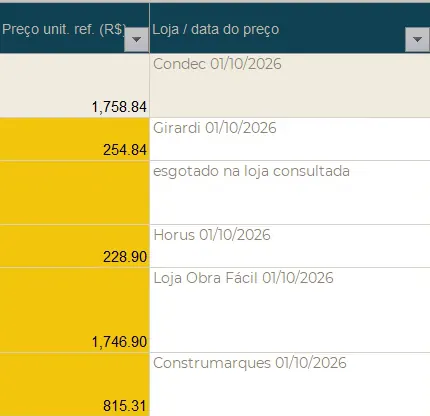
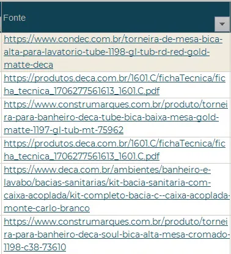

Passo 02 de 04 · Lista de compras com referência de preço
Lista de compras com o link de cada preço a partir do escopo
Ele lê o relatório de escopo e as pranchas, busca cada produto no fabricante ou numa loja online e devolve duas coisas: o relatório com uma ficha por produto (foto, preço, loja, data e link), que também abre no clique do 3D, e a lista de compras em Excel com quantidade, memória de cálculo e o link de cada preço.
# Etapa 2/2 — Referências de produto e lista de compras ## Contexto Continuação de um trabalho feito em outra sessão. Entradas: 1. O relatório HTML da etapa 1: [caminho ou anexo — [PROJ]_Relatorio_Reforma_Antes_Depois.html]. Ele já tem 3D antes/depois com chaves de acabamento em cada elemento, um mapa de acabamentos, um objeto `PRODUTOS = []` vazio e um painel que abre ao clicar num elemento. Leia o código antes de mexer; não refaça o 3D nem o escopo. 2. As pranchas do projeto: [pasta conectada ou anexos]. 3. A lista de marcas/modelos extraída na etapa 1 (colada abaixo em "Lista de especificações"). Mesma regra de confidencialidade: sem cidade, endereço, cliente ou escritório; código do projeto "[PROJ]". ## Entregável A — atualizar o HTML (mesmo arquivo, mesmo nome) 1. **Pesquisa de produtos**: para cada item da lista de especificações, buscar no site do fabricante e, se ele não publicar preço, numa loja online brasileira confiável. Para cada um: nome oficial e código, fabricante, 2–4 frases de detalhes (acabamento, dimensões, formato, características), preço com loja e data ou "não disponível", **URL da página consultada**, URL de uma imagem vista de fato na página. Se o produto saiu de linha ou está indisponível, dizer isso, indicar o equivalente e o que muda (cor, formato, material). Não inventar URLs. Se possível baixar e embutir as imagens como data URI; se o ambiente bloquear, referenciar por URL com fallback visual e me avisar. 2. **Preencher `PRODUTOS`** associando cada produto às chaves de acabamento do 3D e ao ambiente. O clique no elemento passa a mostrar as fichas (imagem, detalhes, preço, link da fonte). As linhas do mapa de acabamentos abrem a mesma ficha. 3. **Nova seção "Referências de produto"** antes das pendências: grade com todas as fichas, aviso de data dos preços e de que variam por região/revenda, destaque para itens fora de linha. 4. **Atualizar as pendências** com o que a pesquisa revelou (produto descontinuado, material diferente do que o nome sugere, acabamento a confirmar). 5. Corrigir no mapa de acabamentos o que a pesquisa esclarecer (ex.: material que a prancha chama de quartzo e o fabricante classifica como aglomerado). ## Entregável B — lista de compras em Excel Nome: [PROJ]_Lista_de_Compras.xlsx. Abas: **Lista de compras**, **Resumo por pacote**, **Fontes**, **Parâmetros**. Colunas da lista: código hierárquico · pacote · item/especificação · marca/modelo · ambiente · **unidade (coluna própria)** · quantidade líquida · **memória de cálculo** (fórmula, dimensões e prancha de onde saiu — ex.: "largura 2,53 do det. const.; profundidade = 2,74 m² ÷ 2,53; perímetro × forro 2,40 − porta 0,70×2,10 − janela 0,70×0,50") · prancha de origem · fator de perda (editável, lookup na aba Parâmetros, declarado como proposta) · quantidade a comprar (fórmula) · preço unitário de referência (editável, vindo da pesquisa) · loja/data · subtotal (fórmula) · hyperlink da fonte · status/pendência. Pacotes: pisos, revestimento de parede, pintura, forro, bancadas (marmoraria, por peça: tampo, rodapia, traves, frente, rodapé, testeira, nicho), louças e metais (por ponto), vidraçaria, marcenaria (por peça do detalhamento; chapas ficam para a marcenaria), iluminação, elétrica, cobertura. Regras: - Quantidade só do que é extraível das pranchas: áreas cotadas, dimensões dos detalhamentos, perímetros medidos na planta na escala declarada (dizendo que foram medidos e devem ser conferidos no local). Descontar vãos cotados. - **O que não for extraível entra sem quantidade e com o motivo escrito** (ex.: "comprimento não cotado", "símbolos não contáveis na rasterização — contar no DWG", "altura da mureta não cotada", "divergência entre paginação e detalhamento"). Não estimar, não arredondar, não completar. - Preço por lata ou por chapa não multiplica m² — deixar o preço como referência na célula/comentário e o subtotal vazio. - Resumo por pacote com COUNTIF/SUMIF e nota do que não entra no total. Aba Fontes com todos os produtos e links. Aba Parâmetros com os fatores de perda editáveis. - Legenda de células editáveis; zero erros de fórmula (recalcular antes de entregar); fonte legível; sem resultado digitado onde cabe fórmula. ## Identidade visual [Seguir a do HTML da etapa 1 / "a seu critério, sóbrio".] ## Como trabalhar - Primeiro leia o HTML e as pranchas; depois a pesquisa (pode paralelizar por família: metais/louças, cerâmicos/tintas, MDF/pedras/box); só então monte as fichas e a planilha. - Renderize o HTML e teste o clique em pelo menos três elementos diferentes. Abra a planilha recalculada e confira 3–4 linhas à mão. - No fim, diga: quantos produtos foram encontrados, quais saíram de linha, quantas linhas da lista ficaram sem quantidade e por quê, e qual é o total de referência com a ressalva do que ele não cobre. ## Lista de especificações (saída da etapa 1 — exemplo fictício, substitua) | Chave 3D | Item em prancha | Ambiente | Prancha | |---|---|---|---| | redgold | Torneira de mesa bica alta Tube 1198 Red Gold — Deca | Living (bancada) | Det. const. living | | goldmatte | Torneira de mesa Tube 1197 Gold Matte — Deca | Lavabo | Det. const. lavabo | | louca | Bacia c/ caixa acoplada Monte Carlo — Deca | Lavabo | Det. const. lavabo | | onix | Porcelanato Onix Cristal acetinado 60x120 — Eliane | Sanit. 01 (piso e parede) | Det. const. sanit. 01 | | cristallo | Porcelanato Cristallo Nude 60x60 — Biancogres | Cozinha/A.S. (piso) | Det. const. cozinha | | carvalho | MDF Carvalho Malva — Duratex | Living (armário, prateleiras) | Det. living 01/02 | | paint | SW 9166 Névoa Passageira, acrílica acetinada — Sherwin-Williams | Paredes gerais | Paginação pintura | | macchia | Textura Macchia na cor SW 9165 — Textura & Cia | Mureta | Paginação pintura | | calacata | Quartzo Calacata (bancada 2,59x0,60 c/ cuba esculpida) | Living | Det. const. living | | vidro | Kit box Elegance, vidro temperado 8 mm | Sanit. 01 e 02 | Det. const. sanit. 01/02 |
O que ele resolve
Lista de compras de reforma é tirar quantidade da prancha, achar o produto certo e cotar item por item. O pulo do gato eu aprendi errando: se você não pedir link, a IA inventa preço que parece real. Com link eu confiro em dois cliques: um na peça do 3D, que abre a ficha com foto, preço e loja, e outro no link FONTE, que leva pra página de onde o preço saiu.
Aqui cada preço vem com loja, data e a URL da página consultada, na ficha do relatório e na coluna Fonte da planilha, e o prompt proíbe inventar URL. Produto esgotado ou fora de linha não ganha preço chutado: a torneira esgotada fica com o link e sem preço, e o porcelanato fora de linha sai marcado em vermelho com o equivalente da linha atual. Quantidade que não sai da prancha entra vazia, com o motivo escrito.
O que ele devolve










Role a tabela para o lado →
| Cód. | Item / especificação | Un | Qtd. líquida | Preço unit. ref. (R$) | Loja / data do preço | Fonte | Status / pendência |
|---|---|---|---|---|---|---|---|
| 1 | Piso living integrado — material A DEFINIR | m² | 51,92 | — | — | — | Pendência A DEFINIR — tabela de revestimento sem especificação |
| 1.4 | Porcelanato Cristallo Nude 60x60 acetinado | m² | 11,56 | 64,90 | Sodimac 01/10/2026 (Cristallo Bianco) | biancogres.com.br | Pendência FORA DE LINHA — definir substituto (P08) |
| 1.5 | Porcelanato Onix Cristal acetinado 60x120 | m² | 2,74 | 84,47 | Balaroti 01/10/2026 | eliane.com | — |
| 2.2 | Pedra natural — parede 01 do living (tipo não especificado) | m² | — | — | — | — | Pendência NÃO EXTRAÍVEL — comprimento e tipo de pedra a definir |
| 5.1 | Quartzo Branco Cintilante — cozinha, A.S. e testeira do shaft | m² | 9,77 | 4.258,80 | Silestone Blanco Stellar — Milano Marmoraria 01/10/2026 | pedrasveneza.com.br | Preço de referência por m² |
| 6 | Torneira de mesa bica alta Tube Red Gold 1198.GL.TUB.RD | un | 1 | 1.758,84 | Condec 01/10/2026 | condec.com.br | — |
| 6.2 | Torneira de mesa bica baixa Tube Gold Matte 1197.GL.TUB.MT | un | 1 | — | esgotado na loja consultada | construmarques.com.br | Pendência Preço não disponível |
| 6.7 | Chuveiro elétrico Acqua Storm Ultra (prancha: 'Acqua Stom') | un | 1 | 569,90 | Condec 01/10/2026 (PIX, 7.800 W 220 V) | lorenzetti.com.br | Tensão/potência a confirmar; cor a definir |
| 6.9 | Cuba de embutir inox 56x34 cm (Lavínia 56 BL) | un | 1 | 349,00 | Loja Tramontina 01/10/2026 | tramontina.com.br | — |
Saída de exemplo · Relatório e aba lista de compras · 9 de 64 itens · Dados reais
Macete(ando o apocalipse)
- Esse processo tende a ser mais preciso depois que você configurar as skills e agentes. Te explico como fazer essas coisas na nossa newsletter, o Campo Minado. Só clicar aqui.
- O engenheiro da nova geração é, acima de tudo, responsável. Lembre-se que IA pode cometer erros. Use ela como um facilitador, não como verdade definitiva. O prompt organiza e explicita o cálculo — quem responde pelo número continua sendo você.
- Link na ficha não é conferência feita. Clica em umas e vê se a página é do mesmo produto, código e acabamento da prancha. O link pode ser do fabricante e o preço, da loja escrita ao lado: na linha 1.4 o link é da Biancogres e o preço é da Sodimac, do Cristallo Bianco, porque o Cristallo Nude saiu de linha. Equivalente indicado é sugestão; quem aprova a troca é o projetista, não a planilha.
- Preço vazio é o prompt funcionando. A torneira Tube Gold Matte, na captura 03 e na linha 6.2, tem link e não tem preço porque estava esgotada na loja consultada. Não completa com o preço que você acha que é: cota e preenche com a sua fonte, senão você inventou o preço que ele se recusou a inventar.
- Preço tem loja e data porque vale pra aquela loja naquele dia, às vezes numa condição de pagamento específica — na linha 6.7 é o preço no PIX. Varia por região e revenda: antes de virar orçamento pro cliente, refaz a cotação com quem vai entregar na obra.
- Quantidade líquida não é quantidade a comprar. O fator de perda é proposta dele, editável na aba Parâmetros, e perímetro medido em planta vem com aviso de conferir no local. Item sem quantidade, tipo a pedra natural da linha 2.2, é pergunta pro projetista, não buraco pra você preencher no olho.
- A foto da ficha vem da página de origem. Se o ambiente bloquear o download, ela fica apontando pro site da loja e some quando a loja mexer na página; neste exemplo, 26 das 28 fichas saíram com foto. Ele tem que te avisar quando não conseguiu embutir; se não avisou, pergunta antes de mandar o relatório pro cliente.
Do escopo ao custo, na ordem da obra
Esse é só um dos prompts que uso no meu dia a dia pra ganhar mais tempo livre.
Posto isso e muito mais no Instagram.